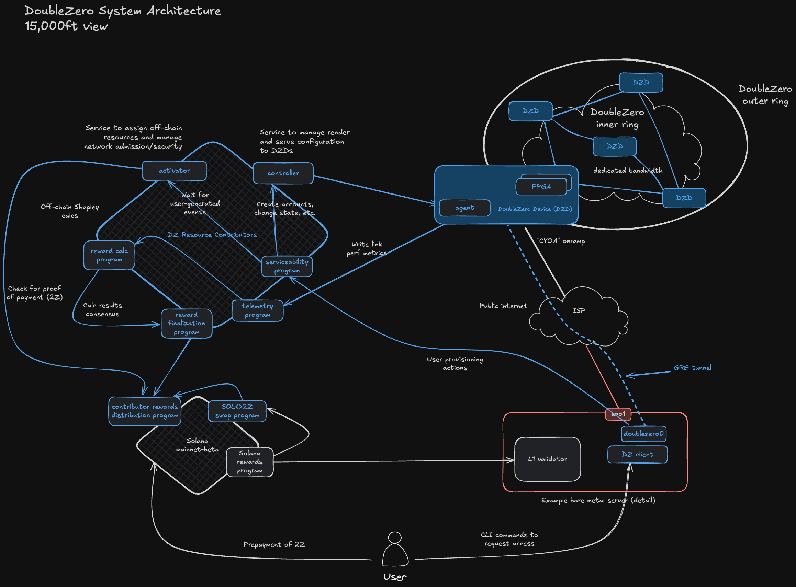

架构
This translation was generated using artificial intelligence and has not been reviewed by a human translator. It may contain inaccuracies or errors and should not be relied upon.
DoubleZero网络的不同参与者和组件是什么？

贡献者
DoubleZero网络由来自全球各城市日益增长的分布式网络基础设施提供商社区的连接和数据包处理贡献组成。贡献者将光纤链路和信息处理资源带入协议，以提供去中心化网状网络。
网络带宽贡献者
网络贡献者必须在两点之间提供专用带宽，在每端运营DoubleZero兼容设备（DZD），并在每端连接到互联网。网络贡献者还必须在每个DZD上运行DoubleZero软件，以提供多播、用户查找和边缘过滤等服务。
DoubleZero网络的物理链路以光纤电缆（通常称为波长服务）的形式提供。网络贡献者提交在两个或多个数据中心之间由基础设施提供商拥有或租赁的未充分利用的网络链路。这些链路在两端由DoubleZero设备终止，DoubleZero设备是运行DoubleZero代理软件实例的物理网络交换机外壳。
DoubleZero交换点（DZX / 交叉连接站点）
DoubleZero交换点（DZX）是网状网络中不同贡献者链路相互桥接的互连点。DZX位于全球发生网络交叉的主要都市区。网络贡献者必须在地理位置最近其链路端点的DZX将其链路交叉连接到更广泛的DoubleZero网状网络中。
计算资源贡献者
与网络贡献者不同，资源贡献者是分布式网络参与者群体，执行维持DoubleZero网络技术完整性和持续功能所必需的各种维护和监控职责。具体而言，他们（i）跟踪用户交易和支付；（ii）计算网络贡献者的费用；（iii）记录（i）和（ii）的结果；（iv）严格以非自由裁量方式管理控制协议代币经济学的智能合约；（v）向适用区块链中继证明；（vi）发布关于链路质量和利用率的遥测数据，为所有网络贡献者提供透明的实时性能指标。
组件
DoubleZero守护程序
DoubleZero守护程序软件运行在需要通过DoubleZero网络通信的服务器上。守护程序与主机的内核网络栈交互，以创建和管理隧道接口、路由表和路由。
激活器
激活器服务由DoubleZero社区的一个或多个计算资源贡献成员托管，监控需要IP地址分配和状态更改的合约事件，并代表网络管理这些更改。
控制器
控制器服务由DoubleZero社区的一个或多个计算资源贡献者托管，作为DoubleZero设备代理基于智能合约事件呈现其当前配置的配置接口。
代理
代理软件直接在DoubleZero设备上运行，并应用由控制器服务解释的配置更改到设备上。代理软件轮询控制器以获取配置更改，计算设备状态的链上规范版本与设备上活动配置之间的任何差异，并应用必要的更改以协调活动配置。
设备
为DoubleZero网络提供路由和链路终止的物理设备外壳。DZD运行DoubleZero代理软件，并根据从控制器服务读取的数据进行配置。